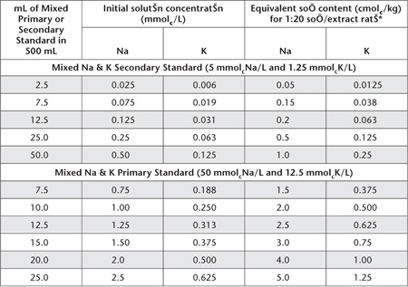
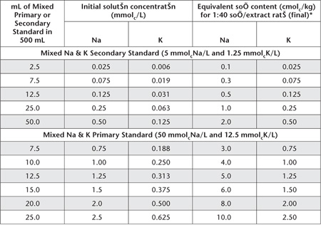
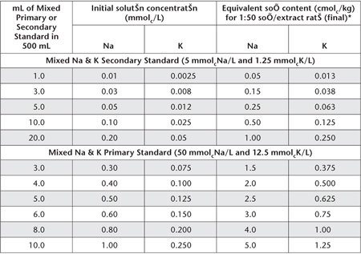
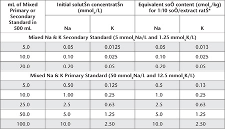
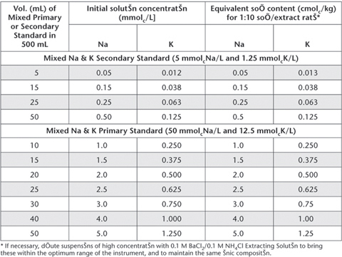
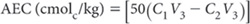
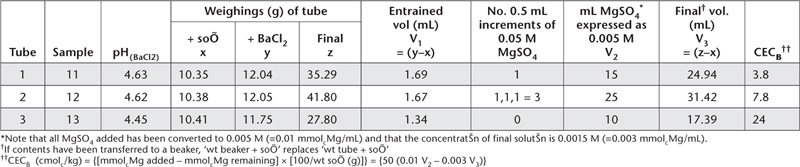

Physical and chemical properties of most soils are influenced by their ion-exchange characteristics, including the amount and balance of individual ions present. Important to soil characterisation are the (normally) divalent exchangeable cations Ca2+ and Mg2+; the monovalent cations Na+, K+, NH4+ and H+; trivalent Al3+; and soil cation and anion exchange capacity (CEC and AEC). The last two are measures of a soil’s ability to retain cations and anions, respectively.
Soil CEC equates to the product of the specific surface area and surface charge density. Coarse materials such as silica sands and poorly weathered feldspar usually have low CEC (<5 cmolc/kg). In contrast, illite and smectite minerals such as montmorillonite, possess moderate to high specific surface areas and surface charge densities. Thus they have relatively high CECs (Uehara and Gillman 1981). The clay minerals kaolinite and gibbsite have low to moderate specific surface areas but low densities of surface charge from isomorphous substitution, resulting in negligible CEC from permanent charge surfaces.
Active surface charges also develop due to adsorption of potential-determining ions, particularly H+ and OH–. Where this occurs, the net surface charge (this may be negative, zero, or positive) is determined by the ion that is adsorbed in excess. The colloids involved are termed ‘variably charged’ as they are influenced by conditions such as solution pH, ionic strength and the presence or absence of specifically adsorbed ions. Functional groups of OM such as carboxyl and amino, as well as mineral oxides, including sesquioxides [these oxides contain three atoms of oxygen with two atoms (or radicals) of some other substance such as Al] possess variable charge characteristics. These properties of colloids are often found in highly weathered soils, which are common in humid, tropical regions.
Effects of the charge characteristics of clays and other colloids may not be readily apparent to the observer (Theng 1980). Losses of nutrient cations, however, such as NH4+, K+, Ca2+ and Mg2+ are greatest when soil CECs are <5 cmolc/kg (Sanchez 1976). In contrast, leaching losses of these nutrient cations are typically low from soils of medium (15–25 cmolc/kg) to high (>25 cmolc/kg) CECs.
Where strong weathering has caused the decomposition of clay minerals, the resultant soil colloids typically become dominated by soil minerals with both positive and negative surface charges. As these soils (including organic colloids) become more acidic, their ECECs decline, while AEC usually increase (Theng 1980; Uehara and Gillman 1981). As P sorption increases, net positive surface charge decreases (Parfitt 1980).
Nutrient anions that would normally leach under humid conditions can be immobilised within the profile of soils with significant AEC, at least until adsorption sites are saturated. Nitrate is weakly adsorbed, while SO42– and H2PO4–, in that ascending order, are strongly adsorbed (Parfitt 1980). Black and Waring (1979) identified the importance of highly weathered sub-soils in these processes, while Gillman and Abel (1987) were able to partition soils in the Tully–Innisfail area of north Queensland into three groups on the basis of their surface charge characteristics. River alluvium had relatively high CEC at soil pH (the current soil pH), including a relatively high portion of permanent negative charge. Nutrient and other cations show resistance to leaching in such soils, even if soil acidification subsequently occurs. Another group, mainly soils formed from granitic and metamorphic rocks, had both low CECs and low AECs, a situation where both nutrient cations and anions are likely to leach. The third group, derived almost entirely from basaltic rock, had low CECs at soil pH, but also relatively high AECs (1.9–3.5 cmolc/kg), particularly at depth. These soil properties favour the leaching of cations and the retention of anions such as nitrate. If allowed to further acidify, the ECEC of these soils would decline while AECs would increase (Rayment et al. 1996). Table 15.1 provides a general guide to the range of CEC values of clay minerals and organic colloids.
Table 15.1. Examples of the expected range of CEC values and nutrient reserves of common clay minerals and organic colloids.
Clay mineral, etc. |
Usual surface charge |
CEC range (cmolc/kg) |
Nutrient reserves |
Halloysite |
negative |
2–10 |
few |
Kaolinite |
negative |
3–15 |
few |
Illite |
negative |
10–40 |
K |
Montmorillionite |
negative |
80–150 |
Mg, K, Fe, etc. |
Vermiculite |
negative |
≈100 |
Mg, K, Fe, etc. |
Organic colloids |
negative |
Zero near pH 4.0; ≈200 at pH 7 |
Few |
Soil ion-exchange properties are usually assessed by replacing or exchanging the ion or ions in question with an index ion of similar electrical charge or sign. For example, cations such as NH4+, Ba2+, H+, lithium (Li+), and silver thiourea (AgTU) have been used for extraction of exchangeable Ca2+, Mg2+, Na+ and K+, and for estimating CEC. Copper thiourea is reported to be a cheaper yet effective alternative extractant to AgTU for the determination of basic cations in soils (Little 1989).
Factors that affect the results reported for exchangeable cations and CEC include size of the index cation, its affinity for particular ions and exchange sites, the associated anion, ionic strength, the soil and solution pH, soil/solution ratio, and time of contact between the soil and solution. Many of these can alter surface charge characteristics of variable-charge colloids during the soil extraction process.
The presence of soluble or potentially soluble salts of the basic cations, including common salt (NaCl), gypsum (CaSO4.2H2O), limestone (CaCO3) and dolomite (CaCO3/MgCO3), can also lead to errors in estimation of exchangeable bases and ECEC. Some methods physically remove these interfering components, usually by pre-treatment with a solvent such as aqueous ethanol or aqueous glycerol (Tucker 1985). Alternatively, soluble salts may be measured directly and subtracted from an estimate of soluble plus exchangeable bases. They may be ignored when insignificant quantities are present or when only approximate estimates of soil exchange properties are required for soil fertility assessment.
So et al. (2006), working with two soils from south-east Queensland and extraction with 0.1 M BaCl2/0.1 M NH4Cl, concluded that when soil solution ionic strength exceeded 50 mM or around 4 dS/m, correction for soluble salts was best done by calculation rather than by prior solvent removal of soil solution cations. This was because prewashing increased measured exchangeable Ca2+ concentrations while simultaneously decreasing the measured exchangeable Na+ concentrations.
Methods described herein for extraction of basic exchangeable cations employ ammonium chloride (1 M NH4Cl at pH 7), ammonium acetate (1 M NH4OAc at pH 7), barium chloride/ammonium chloride (0.1 M BaCl2/0.1 M NH4Cl), alcoholic 1 M NH4Cl at pH 8.5, and AgTU. Most can be expected to extract similar amounts of Ca, Mg, Na and K from non-calcareous and non-saline soils (Gillman et al. 1982). Smaller amounts of Ca and Mg are extracted, especially from oxide-rich soils, by alcoholic 1 M NH4Cl at pH 8.5, an extractant formulated for use on calcareous and sodic soils.
The preferred method for the acidic cations (H+ and Al3+) required for the calculation of ECEC and Al saturation, employs molar potassium chloride (1 M KCl). Exchange acidity of soil at pH 8.2 is determined by extraction with BaCl2/triethanolamine. Soil CEC at pH 8.2 (the sum of the exchangeable basic cations plus BaCl2/triethanolamine exchange acidity) is a component of a criterion in Soil Taxonomy for separating Alfisols and Ultisols. Searle and Lee (1984) reported that AgTU was as effective as 1 M KCl at removing Al from a New Zealand soil.
Table 15.2 has summary details on the methods included in this chapter, which includes and adds to the methods described by Rayment and Higginson (1992). Four chemical procedures for direct estimates of soil CEC are included. Further information on each method category is provided under a series of sub-headings. Refer to Hislop and Hornbeck (2002) for guidance on coping with high-salt concentrations in extract solutions during analysis by ICPAES.
Soil samples for ion exchange determinations, in common with most other soil chemical tests, are typically air dried (40–45°C max.), ground or sieved to a particle size of <2 mm, prior to analysis and subsequent storage. Unlike some soil fertility tests, however, sampling often involves a sequence of depths throughout the soil profile.
Based on a review by Etchevers (1986), there is evidence that air drying can increase soil surface acidity slightly, due to the polarisation of residual water by cations adsorbed to clay surfaces. This enhanced acidity can, in turn, increase the solubility of organic material to a limited extent. Small increases in extractable Al (assumed to be Al3+) have been reported, but this effect is usually ignored because of the analytical convenience of air drying.
The apparent levels of soil K may also be affected by soil drying, sometimes liberating more K and other times fixing soil K (Etchevers 1986). In addition, the season of the year can affect the amount of Al (Hun 1971) and K (Bieske 1968; Anon 1983; Etchevers 1986) extracted by laboratory tests. Bieske (1968) reported the changes in Queensland soils used for sugar cane involved a fairly regular rise and fall in available K+ throughout the year. Increases occurred from winter through to the hot, early summer, followed by a subsequent decrease with the advent of summer rains, irrespective of whether the land was cropped or fallowed. Such effects can be minimised by specifying a preferred time for soil sampling, which for sugar cane in coastal Queensland is May to October (Bieske 1968).
This method enables the reasonably speedy extraction/determination of the exchangeable bases in soil. It is used mainly in assessments of soil fertility and as part of the determination of ECEC. There is no pre-treatment to remove soluble salts or suppression of carbonate dissolution. Consequently, it is not usually recommended for saline, calcareous or gypsiferous soils. Modifications of this method are available when overestimates due to the presence of soluble salts are expected; see Methods 15A2 and 15A3.
Table 15.2. Summary detaÕs of method codes, method titles, technologies and notes on tests for Šn exchange properties, ratŠs and related percentages described in this chapter.
Code |
Technology |
Test method |
Notes |
15A1 |
Equilibration, with no pre-treatment for soluble salts; analysis by ICPAES or AAS. |
Exchangeable bases (Ca2+, Mg2+, Na+, K+) – 1 M NH4Cl at pH 7.0. |
Good estimate of exchangeable bases for acidic and neutral non-saline, non-calcareous and non-gypsiferous soils. Results little affected by analytical finish for cations. |
15A2 |
Equilibration, with prior pre-treatment for soluble salts; analysis as for 15A1. |
|
Good estimate of exchangeable bases for acidic and neutral non-calcareous and non-gypsiferous soils. Results little affected by analytical finish for cations. |
15A3 |
Equilibration, with exchangeable Na+ adjusted for soluble Na+; analysis as for 15A1. |
|
As for 15A2. |
15B1 |
Equilibration followed by filtering/washing for cations (no pre-treatment for soluble salts) with subsequent leaching for CEC. Cation analysis by ICPAES or AAS; CEC by wet chemistry. |
Exchangeable bases and CEC – 1 M NH4Cl at pH 7.0. |
Good estimate of exchangeable bases and CEC for acidic and neutral non-saline, non-calcareous and non-gypsiferous soils. Results little affected by analytical finish for cations. |
15B2 |
As for 15B1 but with pre-treatment for soluble salts. |
|
Good estimate of exchangeable bases and CEC for acidic and neutral, non-calcareous and non-gypsiferous soils. Results little affected by analytical finish for cations. |
15B3 |
As for 15B1 but with exchangeable Na+ adjusted for soluble Na+. |
|
As for 15B2. |
15C1 |
Leaching to remove soluble salts and subsequently for exchangeable cations and CEC. Cation analysis by ICPAES or AAS; CEC by wet chemistry. |
Exchangeable bases and CEC – alcoholic 1 M NH4Cl at pH 8.5. |
Preferred method for exchangeable cations and CEC for soils dominated by permanent surface-charged colloids, irrespective of whether saline or non-saline, gypsiferous or non-gypsiferous, and calcareous or non-calcareous. Results little affected by analytical finish. Will overestimate the CEC of highly weathered soils dominated by variable surface charges. Results little affected by analytical finish for cations. |
15C2 |
MIR diffuse reflectance spectroscopy. |
Exchangeable divalent cations and CEC – by MIR diffuse reflectance spectroscopy. |
A secondary estimate of exchangeable Ca2+ and Mg2+ and CEC based on correlation with results from Method 15C1. |
15D1 |
Leaching to remove soluble salts and subsequently for exchangeable cations and CEC. Cation analysis by ICPAES or AAS; CEC by wet chemistry. |
Exchangeable bases and CEC – 1 M NH4OAc at pH 7.0. |
Good estimate of exchangeable bases and CEC for acidic and neutral, non-calcareous and non-gypsiferous soils dominated by permanent surface charges. Will overestimate the CEC of highly weathered soils dominated by variable surface charges. May also overestimate exchangeable Ca2+ when solid-phase CaCO3 is present. Results little affected by analytical finish for cations. |
15D2 |
Similar to 15D1 but using an automatic extractor. |
Exchangeable bases and CEC – 1 M NH4OAc at pH 7.0, automatic extractor. |
As for 15D1. |
15D3 |
Equilibration with no pre-treatment for soluble salts; analysis by ICPAES or AAS. |
Exchangeable bases – 1 M NH4OAc at pH 7.0, rapid method. |
Rapid estimate of exchangeable bases that will include soluble cations (if present). May also overestimate exchangeable Ca2+ when solid-phase CaCO3 is present. Results little affected by analytical finish for cations. |
15E1 |
Exchange, with 0.1 M BaCl2/0.1 M NH4Cl for cations, followed by compulsive exchange of Ba2+ by Mg2+. |
Exchangeable bases, CEC and AEC by compulsive exchange. |
Good estimate of exchangeable bases, CEC and AEC across a wide range of non-saline, non-calcareous and non-gypsiferous soils typical of humid tropical regions. |
15E2 |
As for 15E1 but with pre-treatment for soluble salts with aqueous ethanol. |
Exchangeable bases, CEC and AEC by compulsive exchange. |
Good estimate of exchangeable bases, CEC and AEC across a wide range of saline and non-saline, non-calcareous and non-gypsiferous soils typical of humid tropical regions. |
15E3 |
As for 15E1 but with exchangeable Na+ adjusted for soluble Na+. |
Exchangeable bases, CEC and AEC by compulsive exchange, adjusted for soluble Na+. |
As for 15E2. |
15F1 |
Equilibration with no pre-treatment for soluble salts; analysis by ICPAES or AAS. |
Exchangeable bases by 0.01 M silver-thiourea (AgTU+). |
Provides a useful estimate of exchangeable bases for acidic and neutral non-saline, non-calcareous and non-gypsiferous soils of low ionic strength. Cation results little affected by analytical finish. |
15F2 |
Equilibration with no pre-treatment for soluble salts; analysis by ICPAES or AAS. |
Exchangeable Al3+ by 0.01 M AgTU. |
Provides a useful estimate of exchangeable Al3+ for acidic soils. Results little affected by analytical finish. |
15F3 |
Indirect chemical assessment of CEC based on residual Ag+, measured by ICPAES or AAS. |
CEC by 0.01 M AgTU+ (CECAgTU). |
Provides a useful estimate of CEC, particularly for soils of low ionic strength. Results little affected by analytical finish for Ag+. |
15G1 |
Equilibration with no pre-treatment for soluble salts; analysis by titration and back titration. |
Exchange acidity (H+ plus Al3+) by 1 M KCl. |
Good estimate of exchange acidity in acidic soils. Poor analytical performance in inter-laboratory proficiency programs (e.g. Rayment et al. 2007) is mainly due to the inclusion of near neutral and alkaline soils for which the method is unsuitable. |
15H1 |
Equilibration then analysis by titration. |
Exchange acidity by triethanolamine (TEA). |
A reliable, specific purpose test that can elevate the apparent exchange acidity of soils dominated by variable surface-charged colloids. |
15I1 |
Measurement of NH4+ displaced with either 1 M NaCl or mixed KNO3-Ca(NO3)2 solution. |
CEC measurement – distillation of NH4+. |
A reliable (classical) analytical finish that is labour-intensive. |
15I2 |
Measurement of NH4+ displaced by leaching with 1 M NaCl. |
CEC measurement – distillation of NH4+. |
A reliable, automated, colorimetric method for NH4+. |
15I3 |
Measurement by continuous SFA of NH4+ and Cl– displaced from exchange sites (+ residual NH4+ and Cl–). |
CEC measurement – automated determination of NH4+ and Cl–. |
Reliable, colorimetric methods for NH4+ and Cl–. |
15I4 |
Measurement by formol and Ag/AgCl titration of NH4+ and Cl– displaced from exchange sites (+ residual NH4+ and Cl–). |
CEC measurement – titration of NH4+ and Cl–. |
Only recommended for laboratories unable to undertake Method 15I3. |
15J1 |
Measurement by summation of basic + acidic cations. |
Effective CEC (ECEC). |
Method is reliable for acidic and neutral non-saline, non-calcareous and non-gypsiferous soils. |
15K1 |
Calculated by summation of basic cations + exchange acidity by TEA. |
CEC – pH 8.2 (CECpH 8.2). |
Method used as one of the separating criteria for Alfisols and Ultisols in Soil Taxonomy. Refer to notes for Method 15H1. |
15L1 |
Calculated by summation of basic cations relative to CEC. |
Base saturation percentage (BSP). |
Method is reliable but not suitable for application to saline soils unless there was pre-treatment to remove soluble salts. |
15M1 |
Calculation. |
Basic cation ratios |
Method is reliable for non-saline soils. Ratios involving Na+ are questionable if applied to saline soils without pre-treatment to remove soluble salts. |
15N1 |
Calculation. |
Exchangeable Na+ percentage (ESP) |
Method is widely used to provide an estimate of soil sodicity hazard. ESP values are questionable if applied to saline soils without pre-treatment to remove soluble salts. |
15O1 |
Measurement by calculation |
Percent Al saturation |
Method is reliable but interpretation of results as a guide to Al toxicity requires care. |
Figure 15.1 Soil exchangeable cation concentrations (Ca2+, Mg2+, Na+, K+) by method 15A1 vs % robust CVs.
Soils are equilibrated with 1 M NH4Cl at pH 7.0 for 1 h with mechanical shaking at a soil/solution ratio of 1:20. The suspensions are clarified and analysed for exchangeable bases. Procedures for Ca2+, Mg2+, Na+ and K+ based on ICPAES (preferred) or AAS are described. Alternatively, Na+ and K+ may be determined by FES.
Measurement performance across-laboratories for Method 15A1 is available from interlaboratory proficiency programs of ASPAC from 1997–2007. How robust co-efficients of variation vary continuously with increasing concentrations of the basic exchangeable cations are shown in Figure 15.1. The data were sourced from laboratories across Australasia (e.g. Peverill and Johnstone 1997; Rayment et al. 2007). Significant trends are emerging for exchangeable Na+ and exchangeable Mg2+.
Extracting Solution – 1 M Ammonium Chloride at pH 7.0
Dissolve 535 g ammonium chloride (NH4Cl – low in Ca, Mg, Na and K impurities) in deionised water and dilute to 9 L. Adjust to pH 7.0 by adding ammonium hydroxide (NH4OH). Wash the electrodes of the pH meter thoroughly before placing them in the Extracting Solution, otherwise K+ salts from the calomel electrode may cause contamination.
Make the volume to 10 L with deionised water and store in sealed containers. Plastic containers are preferred, however borosilicate glassware may be substituted; soda-glass should not be used.
5 M Ammonium Chloride at pH 7.0
Dissolve 267.5 g NH4Cl (identical to that used for the Extracting Solution) and dilute to 900 mL. Adjust to pH 7.0 as described for the Extracting Solution and make to 1.0 L.
Strontium Chloride Solutions (only required if using an AAS analytical finish)
Sr Stock Solution
1 L contains 8.33 g of Sr.
Dissolve 25.35 g strontium chloride (SrCl2.6H2O) and dilute to 1 L with deionised water. Store in plastic or borosilicate bottle.
Sr Working Solution
1 L contains 1.67 g of Sr.
Dilute 200 mL Sr stock solution to 1 L with deionised water. Store in a plastic or borosilicate bottle.
Sr Diluting Solution for Ca and Mg Analysis by AAS
1 L contains 1.50 g of Sr.
Add 180 mL Sr stock solution to 100 mL 1 M NH4Cl Extracting Solution (identical to that used for soil extractions) and dilute to 1 L with deionised water.
Wetting Agent – Brij 35
As for Method 5A2.
Lithium Chloride for Automated Na+ and K+
Dissolve 0.11 g lithium chloride (LiCl), add 1 mL Brij 35 Wetting Agent (see Method 5A2), and make to 1 L with deionised water.
Mixed Ca and Mg Primary Standard
1 L contains 100 mmolc of Ca and Mg.
Use certified commercial standard concentrates or dry calcium carbonate (CaCO3, Primary Standard grade) by heating at 110°C to constant weight. Also dry magnesium oxide (MgO, heavy) by heating in an electric muffle furnace at 600–700°C for 2 h. Cool, and store the chemicals in a desiccator without desiccant.
Weigh 2.0152 g MgO and 5.0045 g CaCO3 and wash into a 1 L conical flask with about 50 mL deionised water. Add 240 mL 1 M HCl and boil until all CO2 is expelled. Cover and allow to cool, then transfer quantitatively to a 1 L volumetric flask. Dilute to volume with CO2-free (boiled) deionised water and mix well. Transfer to a clean plastic bottle. Should MgO not assay at 100% purity, adjust the weight according to the assay obtained.
Mixed Na and K Primary Standard
1 L contains 50 mmolc of Na and 12.5 mmolc of K.
Use certified commercial standard concentrates or dry sodium chloride (NaCl) at 105°C for 2 h and potassium chloride (KCl) for 2 days at 115–120°C. When dry, cool and store in a desiccator without desiccant. Weigh 2.9221 g NaCl and 0.9319 g KCl and dissolve separately with deionised water. Transfer quantitatively to a 1 L volumetric flask and make to 1.0 L with deionised water. Store in a clean plastic bottle.
Mixed Ca and Mg Secondary Standard
1 L contains 10 mmolc of Ca and Mg.
Take 50 mL of Mixed Ca and Mg Primary Standard and dilute to 500 mL in a volumetric flask with CO2-free (boiled) deionised water. This solution should be freshly prepared each time Working Standards are required.
Mixed Na and K Secondary Standard
1 L contains 5.0 mmolc of Na and 1.25 mmolc of K.
Take 50 mL of Mixed Na and K Primary Standard and dilute to 500 mL in a volumetric flask with CO2-free deionised water. This solution should be freshly prepared each time Working Standards are required.
Mixed Working Standards for Exchangeable Bases
Dispense Mixed Ca and Mg Primary or Secondary Standards, as indicated in Table 15.3 and Mixed Na and K Primary Standards as indicated in Table 15.4, into 500 mL volumetric flasks. Add 100 mL 5 M NH4Cl to each and dilute to 500 mL with CO2-free deionised water.
Weigh 5.00 g of air-dry soil (<2 mm) into a 250 mL plastic extracting bottle and add 100 mL 1 M NH4Cl at pH 7.0 Extracting Solution. Stopper securely and mechanically shake end-over-end at ≈25°C for 1 h. Centrifuge or filter soil extracts. If filtering, prepare Whatman No. 40 filter papers in 75 mm plastic funnels and place suitable clean, dry, receiving containers
Table 15.3. Examples of dÕutŠns and concentratŠns for Ca and Mg Working Standards – 1 M NH4Cl at pH 7.0.
|
|
Equivalent soÕ content (cmolc/kg) of Ca & Mg, respectively, for 1:20 soÕ/extract ratŠ(final) following: |
|
mL of Mixed Primary or Secondary Standard in 500 mL |
Initial solutŠn concentraŠon (mmolcCa & Mg/L) |
1 + 9 dÕuŠn* of samples and standards |
1 + 49 dÕutŠn† †† of samples; |
Mixed Ca & Mg Secondary Standard (10 mmolcCa & Mg/L) |
|||
2.5 |
0.05 |
0.1 |
0.5 |
5.0 |
0.10 |
0.2 |
1.0 |
7.5 |
0.15 |
0.3 |
1.5 |
12.5 |
0.25 |
0.5 |
2.5 |
25.0 |
0.50 |
1.0 |
5.0 |
50.0 |
1.00 |
2.0 |
10.0 |
Mixed Ca & Mg Primary Standard (100 mmolcCa & Mg/L) |
|||
7.5 |
1.5 |
3.0 |
15.0 |
10.0 |
2.0 |
4.0 |
20.0 |
12.5 |
2.5 |
5.0 |
25.0 |
15.0 |
3.0 |
6.0 |
30.0 |
20.0 |
4.0 |
8.0 |
40.0 |
25.0 |
5.0 |
10.0 |
50.0 |
*DÕute 1 part Working Standards and sample extracts with 9 parts Sr Working SolutŠn if analysing by AAS. For ICPAES, substitute the Sr Working SolutŠn with NH4Cl Extracting SolutŠn.
†AAS analysis requires accurate 1:5 dÕutŠn of samples already dÕuted 1+9 with Sr Working SolutŠn. Use Sr DÕuting SolutŠn for Ca and Mg Analysis by AAS (1 L contains 1.50 g Sr) as dÕuent. Working Standards already dÕuted 1+9 should not be further dÕuted.
††For ICPAES analysis, substitute the Sr Working SolutŠns with NH4Cl Extracting SolutŠn.
Table 15.4. Examples of dÕutŠns and concentratŠns for Na and K Working Standards – 1 M NH4Cl at pH 7.0.

*If necessary, dÕute extracts of high concentratŠn with 1 M NH4Cl Extracting SolutŠn to bring these within the optimum range of the instrument, and to maintain the same concentratŠns of NH4Cl in standards and sample extracts.
Determination of Ca2+, Mg2+, Na+ and K+ by ICPAES
Set up and operate the ICPAES instrument as advised by the manufacturer. Suitable wavelengths are: Ca = 430.25 nm; Mg = 285.21 nm; Na = 588.96 nm; and K = 766.49 nm. Calibrate the instrument using an appropriate range of Working Standard Solutions, guided by examples in Tables 15.3 and 15.4. The 1:20 soil/extraction ratio can be factored into the calibration on the ICPAES. A reagent blank should also be measured and adjustments made as necessary.
Determination of Ca2+, Mg2+, Na+ and K+ by AAS
Follow manufacturer’s recommendations with respect to instrument parameters; an air-acetylene flame is usual for all elements; preferred spectral lines are: Ca = 422.7 nm; Mg = 285.2 nm; Na = 589.0 nm; and K = 766.5 nm. Ca2+ and Mg2+ are measured on diluted extracts, whereas, extracts for Na+ and K+ analysis are only diluted if over range. A reagent blank should also be measured and adjustments made as necessary.
For Ca2+ and Mg2+, dilute each soil extract and each Ca and Mg Working Standard with Sr Working Solution as indicated in Table 15.3, noting that Sr is included to suppress interferences in measurement due to phosphate and other ions (MacPhee and Ball 1967). Should Ca2+ and Mg2+ concentrations be above the optimum range of the instrument, dilute samples only as indicated in Table 15.3. Mix well, then determine Ca2+ and Mg2+ concentrations directly, adjusting as necessary for the relevant dilution.
For measurement of Na+ and K+ by AAS, use a selection of Working Standards (Table 15.4). Determine concentrations of Na+ and K+ in soil extracts directly from the instrument. Settings and operation of the instrument should be checked periodically.
Automated Na and K
This is a reliable alternative analytical finish when laboratories have suitable instrumentation. Ensure individual components of the Na/K automatic analyser are connected in accord with manufacturer’s instructions. A typical continuous segmented-flow manifold for a Technicon™ Dual Channel IV Flame Photometer is shown in Figure 15.2; LiCl solution is used as an internal reference.
Prior to commencement of each run, after reagents and deionised water (plus 0.20 mL/L Brij 35) wash solution have been circulating for at least 20 min, ‘condition’ the manifold and check instrument settings by pumping the highest working standard required for several min.
Determine concentrations of Na and K in the soil extracts directly [cmolc/kg] from calibration curves drawn from Working Standards (Table 15.4) run on commencement, after at least every 30 soil extracts, and on completion. A reagent blank should also be measured and adjustments made as necessary.
Report exchangeable Ca2+, Mg2+, Na+ and K+, respectively (cmolc/kg) on an oven-dry soil basis. Use the air-dry moisture to oven-dry moisture ratio to make the oven-dry conversion. Refer to Method 2A1 for guidance with regard to this soil moisture calculation.
This method is similar to 15A1 except that there is a pre-treatment with aqueous ethanol and aqueous glycerol to remove soluble salts. This pre-treatment is desirable when soil EC (1:5 soil/water; Method 3A1) exceeds ≈0.3 dS/m.
Figure 15.2. Continuous segmented flow manifold for Na+ and K+ in 1 M NH4Cl soil extracts.
The effectiveness of various solvents for removal of soluble salts has been discussed by Tucker (1985). Here, aqueous ethanol and aqueous glycerol, at the soil solution ratio and extraction time of this method, can remove 0.6–0.7% of finely divided gypsum from soil. If more is present or the gypsum resists dissolution, direct measurement of gypsum and other soluble salts are recommended, followed by appropriate adjustments to exchangeable bases.
60% Aqueous Ethanol (w/w)
Mix 665 mL of 96% ethanol (C2H5OH; e.g. special grade Sarina – SMF3; S.G. 0.803) and make to 1 L with deionised water. Deionise if EC >10-3 dS/m or if pH is not within the range 5.5–7.0. Pass through a column of fresh, mixed-bed ion exchanger in the H+/OH– form, such as Zeo-Karb 225/De Acidite FF or equivalents.
Remove dissolved air by boiling or by drawing the prepared reagent through a fine jet under vacuum into a Buchner filtration flask connected through a trap to a vacuum pump.
20% Aqueous Glycerol
Combine 200 mL 87–88% technical glycerol (CH2OH.CHOH.CH2OH; wt/mL about 1.23 g) with 800 mL deionised water. Deionise if necessary as described for 60% Aqueous Ethanol. Boil to sterilise and add 0.5 g of thymol crystals (C10H14O) as a preservative.
Weigh 5.00 g air-dry soil (<2 mm) into a preweighed 50 mL centrifuge tube and add 25 mL 60% Aqueous Ethanol. Seal and shake for 30 min. Within 30 min of that action, centrifuge and remove the supernatant solution by suction.
Drain the tube upside down on a piece of absorbent paper to remove excess solvent. Disperse the soil mechanically and add a second 25 mL of aqueous ethanol, centrifuge and decant and drain as before. Repeat the process a third time using 20% Aqueous Glycerol in place of Aqueous Ethanol. Weigh the centrifuge tube to determine the approximate volume of entrained aqueous solvents. Transfer the pretreated soil to a 250 mL plastic extracting bottle using 100 mL 1 M NH4Cl at pH 7.0 Extracting Solution. Proceed with the extraction and analysis of the exchangeable basic cations as described in Method 15A1.
When 5.0 g of soil are extracted with 100 mL of NH4Cl, increase the determined values by the ratio {[100 + Mass (g) of entrained aqueous solvent]/100} to obtain the concentration of exchangeable bases on an air-dry basis.
Report exchangeable Ca2+, Mg2+, Na+ and K+ (cmolc/kg), expressed on an oven-dry soil basis. Use the air-dry moisture to oven-dry moisture ratio to make the oven-dry conversion. Refer to Method 2A1 for guidance with regard to this soil moisture calculation.
This method is identical to 15A1 except that a calculation based on the concentration of soluble Cl– present is used to adjust for the apparent level of exchangeable Na+ in the soil. This approximate correction for soluble Na+ is an alternative to chemical pre-treatment when EC (1:5, soil/water) exceeds ≈0.3 dS/m.
Determine the amounts of Ca2+, Mg2+, Na+ and K+ extracted by 1 M NH4Cl at pH 7.0 (Method 15A1) and the amount of water-soluble Cl– present in the soil (Method 5) at the same soil moisture status. Convert mg Cl–/kg to cmolc/kg by dividing by 354.5. On the assumption that all Cl– is associated with NaCl, calculate corrected exchangeable Na+ by subtracting an amount equivalent to the soluble Cl–. The measured values for exchangeable Ca2+, Mg2+ and K+ are not affected.
Report exchangeable Ca2+, Mg2+, Na+ and K+ (cmolc/kg), expressed on an oven-dry soil basis. Use the air-dry moisture to oven-dry moisture ratio to make the oven-dry conversion. Refer to Method 2A1 for guidance with regard to this soil moisture calculation.
This method is suitable for direct measurement of cation exchange capacity (CEC) on soils known to be dominated by minerals with permanent surface charge. In addition, it gives estimates of exchangeable bases (Ca2+, Mg2+, Na+ and K+) similar to those obtained by method 15A1.
Nowadays, the method is not used widely, but it provides a link to historical data on the ion exchange properties of Australian soils (e.g. Stace et al. 1968). It is appropriate for the measurement of basic exchangeable cations from non-calcareous, non-gypsiferous, near neutral soils that are low in soluble salts [EC (1:5, soil/water) <0.3 dS/m].
Extraction of exchangeable bases is achieved by initially shaking the soil for 1 h with aqueous 1 M NH4Cl at pH 7.0 at a soil/solution ratio of 1:10. The suspension is then filtered and the soil washed with additional Extracting Solution giving a final soil/solution ratio of 1:20. Exchangeable bases are determined in the combined extract.
CEC is determined after leaching soil in the filter funnel with a solution of 15% potassium nitrate/6% calcium nitrate to displace exchangeable NH4+. According to Tucker and Beattie (1974a), the KNO3 + Ca(NO3)2.4H2O solution should displace the residual Cl– completely in addition to removing >99% of NH4+ from soils of high exchange capacity.
Contemporary information on measurement performance within and across laboratories is unavailable.
Extracting Solution – 1 M Ammonium Chloride at pH 7.0
As for Method 15A1.
5 M Ammonium Chloride at pH 7.0
As for Method 15A1.
0.05 M Ammonium Chloride Solution
Dilute 50 mL 1 M NH4Cl Extracting Solution to 1 L with deionised water.
Strontium Chloride Solutions (only required if using an AAS analytical finish)
As for Method 15A1.
Wetting Agent – Brij 35
As for Method 15A1.
Lithium Chloride for Automated Na+ and K+ Analysis
As for Method 15A1.
As for Method 15A2.
K-Ca Displacing Solution (15% potassium nitrate and 6% calcium nitrate)
Dissolve 150 g potassium nitrate (KNO3) in 800 mL deionised water, warming as necessary. Add 60 g calcium nitrate [Ca(NO3)2.4H2O], dissolve, and make to 1 L with deionised water.
0.1 M Nitric Acid
For use as collecting solution.
Acid-washed Sand
This may be purchased. Alternatively, prepare as outlined by Hewitt (1965) or Blakemore et al. (1987). Preferred particle size range is from 0.25 to 0.5 mm (to pass 30–60 mesh sieves).
Standard Solutions for Exchangeable Bases
As for Method 15A1.
Extraction of exchangeable bases
Weigh 5.00 g air-dry soil (<2 mm) and transfer to a 100 to 250 mL plastic extraction container. Also add about 4 g Acid-washed Sand to facilitate subsequent leachings. Add 50 mL of 1 M NH4Cl at pH 7.0 Extracting Solution, cap extraction containers securely, and mechanically shake end-over-end at about 25°C for 2 h.
Prepare Whatman No. 1 filter papers in 75 mm plastic funnels, arranged to deliver into borosilicate glass or plastic containers graduated to 100 mL. Wash filter paper and apparatus with ≈20 mL 1 M NH4Cl Extracting Solution and discard the washings.
When shaking is complete, quickly (within ≈30 min) and quantitatively transfer the soil plus sand onto the filter paper, aided by a wash bottle filled with 1 M NH4Cl Extracting Solution. Continue washing the soil plus sand with the Extracting Solution until almost 100 mL of leachate has collected. Remove plastic funnels carefully and make volume of leachate to 100 mL with 1 M NH4Cl Extracting Solution. Retain leachate for determination of exchangeable bases.
Washing excess NH4 Cl from soils
For convenience, place the funnels on their respective empty soil extraction containers for washing of soil plus sand prior to releaching for CEC. With a minimum of delay (no drying of soil should occur), wash the soil on the filter paper with about 25 mL of 0.05 M NH4Cl solution to reduce levels of entrained NH4Cl. Discard this leachate. Further reduce levels of entrained NH4Cl by washing the filter paper and soil plus sand three times with 25 mL of 60% Aqueous Ethanol; discard these leachates and remove the collecting containers.
Displacement of NH4+
Place funnels containing the now washed soil plus sand over borosilicate or plastic flasks graduated at 200 mL, each containing 80 mL of 0.1 M HNO3 as a collecting solution.
Commence leaching with K-Ca Displacing Solution, ensuring contact with all soil particles, until 100 mL have passed through the soil. Make volume of leachate to 200 mL with K-Ca Displacing Solution. Stopper, mix well and retain for CEC determination by Method 15I3 or 15I4: discard the soil plus sand.
Ca2+, Mg2+, Na+ and K+
Determine as for Method 15A1.
Report exchangeable Ca2+, Mg2+, Na+ and K+ (cmolc/kg), expressed on an oven-dry soil basis. Use the air-dry moisture to oven-dry moisture ratio to make the oven-dry conversion. Refer to Method 2A1 for guidance with regard to this soil moisture calculation.
CEC
Determine CEC by either Method 15I3 or by Method 15I4.
Report CEC (with relevant method code) (cmolc/kg), expressed on an oven-dry soil basis. Use the air-dry moisture to oven-dry moisture ratio to make the oven-dry conversion. Refer to Method 2A1 for guidance with regard to this soil moisture calculation.
This method is similar to 15B1 except that there is a pre-treatment with aqueous ethanol and aqueous glycerol to remove soluble salts.
60% Aqueous Ethanol (w/w)
As for Method 15A2.
20% Aqueous Glycerol
As for Method 15A2.
Other Reagents
As for Method 15A1.
Follow the 60% Aqueous Ethanol – 20% Aqueous Glycerol wash procedure given for Method 15A2. When completed, transfer the pretreated soil plus about 4 g Acid-washed Sand to the plastic extraction container. Proceed as described in Method 15B1 but make allowance for entrained aqueous solvent as described in Method 15A2.
Determine and report exchangeable cations and CEC (cmolc/kg), expressed on an oven-dry soil basis as for Method 15B1. Refer to Method 2A1 for guidance with regard to this soil moisture calculation.
This procedure is identical to Method 15B1 except that a calculation based on the amount of water soluble Cl– in the soil is used to adjust for the apparent level of exchangeable Na+ present in the same soil. This approximate correction for soluble Na+ is an alternative to chemical pre-treatment when EC (1:5, soil/water) exceeds ≈0.3 dS/m and NaCl is known to be the dominant soluble salt.
Determine exchangeable bases (Method 15B1) and water soluble Cl– in the soil (Method 5) and continue as described in Method 15A3 and 15B1.
Determine and report exchangeable cations and CEC (cmolc/kg), expressed on an oven-dry soil basis. Refer to Method 2A1 for guidance with regard to this soil moisture calculation.
This method is preferred for estimates of exchangeable bases (Ca2+, Mg2+, Na+ and K+) and CEC on alkaline soils containing solid-phase carbonates (Tucker 1954; Loveday et al. 1972). This includes calcareous soils from the central west of New South Wales (Pierce and Morris 2004). It will also provide reliable estimates on soils dominated by colloids with permanent negative surface charges.
The method is known to underestimate exchangeable Ca2+ and Mg2+ and simultaneously overestimate apparent CEC of neutral and acidic soils that contain variable-charge colloids (Gillman et al. 1982; Baker 1984). By virtue of its high ionic strength and strong buffering capacity, however, it does provide a measure of maximum negative charge that can be developed by soils containing variable-charge colloids.
A combination of 60% aqueous ethanol and 20% aqueous glycerol are used initially to remove soluble salts prior to extraction of cations by leaching with alcoholic 1 M NH4Cl at pH 8.5 (Tucker 1971) at a soil/solution ratio of 1:20. Exchangeable cations are determined in the leachate using ICPAES (preferred), AAS (Ca2+, Mg2+, Na+ and K+) or FES (Na+ and K+).
CEC is determined after displacing NH4+ (and Cl–) with a solution of 15% KNO3 plus 6% Ca(NO3)2.4H2O. This K-Ca solution combination has a multiple capacity for effectively displacing exchangeable NH4+ from exchange sites (Tucker and Beattie 1974a) in addition to excess Cl–.
Apparatus and operational procedures for a 2.5 g soil sample (<2 mm air-dry) are described, although larger size soil samples (plus commensurate increases in extractant, etc.) do lessen the possibility of measurement variability. There is a pre-treatment to remove most soluble salts. Carbonate dissolution is suppressed, but gypsum can interfere. If more than 0.6–0.7% gypsum is present, direct measurement of gypsum is recommended, followed by appropriate adjustments to exchangeable bases and CEC.
Extracting Solution – Alcoholic 1 M Ammonium Chloride at pH 8.5
Dissolve 535 g ammonium chloride (NH4Cl – low in Ca2+, Mg2+, Na+ and K+) in about 3 L of deionised water. Add 6.65 L of 96% ethanol (special grade Sarina – SMF3; sg. 0.803 containing 2% methanol) and shake or stir well to expel any entrained air. Using a pH meter (wash salts from glass and calomel electrodes before use), adjust solution to pH 8.5 with high purity ammonium hydroxide (NH4OH). Make volume to 10 L with deionised water. Keep well sealed to prevent access of CO2 and loss of free NH3. This Extracting Solution contains approximately 60% w/w of 96% ethanol/kg solution.
5 M Ammonium Chloride at pH 8.5
As for Method 15A1 but adjust to pH 8.5 as described for the Extracting Solution.
Alcoholic 0.1 M NH4 Cl Wash Solution
Add 100 mL alcoholic 1 M NH4Cl at pH 8.5 Extracting Solution to 290 mL deionised water. Add 600 mL 96% ethanol. Adjust to pH 8.5 with high purity NH4OH and make to 1 L with deionised water. Mix well and store in a stoppered container.
Strontium Chloride Solutions (only required if using an AAS analytical finish)
Sr Stock Solution
As for Method 15A1.
Sr Working Solution
As for Method 15A1.
Diluting Solution for Ca2+ and Mg2+ Analysis
1 L contains 1.5 g of Sr
Add 180 mL Sr Stock Solution to 60 mL alcoholic 1 M NH4Cl Extracting Solution and 40 mL 0.5 M HCl solution (both reagents from the same batches used during leaching of exchangeable bases). Dilute to 1 L with deionised water.
Lithium Chloride for Automated Na+ and K+
As for Method 15A1.
Wetting Agent – Brij 35
As for Method 5A2.
60% Aqueous Ethanol (w/w)
As for Method 15A2.
20% Aqueous Glycerol
As for Method 15A2.
K-Ca Displacing Solution
15% potassium nitrate and 6% calcium nitrate. As for Method 15B1.
0.5 M Hydrochloric Acid
1 M Hydrochloric Acid
Special Diluting Solution
Combine 400 mL 0.5 M HCl and 600 mL Alcoholic 1 M NH4Cl at pH 8.5 Extracting Solution and mix well. Reagents should be from the same batches used for leaching the soils.
0.1 M Nitric Acid
For use as collecting solution.
Acid-washed Sand
As for Method 15B1.
Mixed Primary and Secondary Standards for Ca2+, Mg2+, Na+ and K+
As for Method 15A1.
Mixed Working Standards for Exchangeable Bases
Accurately dispense Mixed Ca and Mg Primary and Secondary Standards as indicated in Table 15.5 and Mixed Na and K Primary and Secondary Standards as indicated in Table 15.6 into 500 mL volumetric flasks. Add 60 mL of 5 M NH4Cl at pH 8.5, 200 mL 96% Ethanol and 100 mL of 1 M HCl to each flask and make to volume with CO2-free deionised water and mix. Store in clean plastic bottles.
Table 15.5. Examples of dÕutŠns and concentratŠns for Ca2+ and Mg2+ Working Standards – Alcoholic 1 M NH4Cl at pH 8.5.
|
|
Equivalent soÕ content (cmolc/kg) of Ca & Mg, respectively, for 1:40 soÕ/extract ratŠ (final) following: |
|
mL of Mixed Primary or Secondary Standard in 500 mL |
Initial solutŠn concentratŠn (mmolcCa & Mg/L) |
1 + 9 dÕutŠn* of samples and standards |
1 + 49 dÕutŠn† †† of samples; 1 + 9 dÕutŠn of standards |
Mixed Ca & Mg Secondary Standard (10 mmolcCa & Mg/L) |
|||
2.5 |
0.05 |
0.2 |
– |
7.5 |
0.15 |
0.6 |
3.0 |
12.5 |
0.25 |
1.0 |
5.0 |
25.0 |
0.50 |
2.0 |
10.0 |
50.0 |
1.00 |
4.0 |
20.0 |
Mixed Ca & Mg Primary Standard (100 mmolcCa & Mg/L) |
|||
7.5 |
1.5 |
6.0 |
30.0 |
10.0 |
2.0 |
8.0 |
40.0 |
12.5 |
2.5 |
10.0 |
50.0 |
15.0 |
3.0 |
12.0 |
60.0 |
20.0 |
4.0 |
16.0 |
80.0 |
25.0 |
5.0 |
20.0 |
100.0 |
*DÕute 1 part Working Standards and sample leachates with 9 parts Sr Working SolutŠn if analysing by AAS. For ICPAES, substitute the Sr Working SolutŠn with Alcoholic 1 M NH4Cl at pH 8.5 Extracting SolutŠn.
†AAS analysis requires accurate 1:5 dÕutŠn of samples already dÕuted 1+9 with Sr Working SolutŠn. Use Sr DÕuting SoluŠon for Ca2+ and Mg2+ Analysis by AAS (1 L contains 1.50 g Sr) as dÕuent. Working Standards already dÕuted 1+9 should not be further dÕuted.
††Some ICPAES may experience difficulties due to the presence of alcohol. If ICPAES analysis is possible, substitute the Sr Working SolutŠns with Alcoholic 1 M NH4Cl at pH 8.5 Extracting SolutŠn.
Table 15.6. Examples of dÕutŠns and concentratŠns for Na+ and K+ Working Standards – Alcoholic 1 M NH4Cl at pH 8.5.

*If necessary, dÕute extracts of high concentratŠn with Alcoholic 1 M NH4Cl at pH 8.5 Extracting SolutŠn to bring these within the optimum range of the instrument and to maintain the same concentratŠns of NH4Cl in standards and sample extracts.
Micro Leaching Columns (see Figure 15.3)
Leaching columns for 2.5 g soil samples are made from two 15 mL polypropylene centrifuge tubes (e.g. Camlec CP 400C or Kayline CP 10015C) by making a 1 mm hole in the base of each tube. When one tube is placed inside the top of another, it acts as a small reservoir for reagents during leaching. A larger plastic reservoir may be fitted above the reservoir tubes in their rack. A small borosilicate glass wool or cotton wool plug is used to retain soil within the leaching tube.
Micro Leaching Column Rack
The rack is constructed from Perspex (or similar) and is about 25 × 20 cm. Each rack has 50 holes which accept the leaching tubes. Holes are placed to allow leaching tubes to protrude into necks of borosilicate glass or plastic bottles, graduated to hold 100 mL. These bottles are held in place by a wooden tray or similar.
Leaching tubes and reservoirs can be capped individually or covered with plastic sheet to reduce evaporation of Extracting Solution during leaching, to prevent contamination and to limit reactions with atmospheric gases.
Figure 15.3. Lower portion of microleaching tube used for exchangeable bases and CEC involving alcoholic 1 M NH4Cl (Method 15C1).
Conditioning apparatus
Place a small plug of borosilicate glass wool or cotton wool in the bottom of each leaching tube and place in rack. Cover with borosilicate wool or cotton wool (depth about 2 mm) with acid-washed sand.
Place the rack of tubes over a suitable bulk container and leach all columns with approximately 10 mL of 1 M HNO3 solution followed by at least 10 mL of deionised water. Discard the leachate.
Allow leaching columns to dry (a drying cabinet may be used to hasten this step).
Leaching of Exchangeable Bases
Weigh 2.50 g air-dry soil (<2 mm), mix thoroughly with an equal quantity of acid-washed sand, and transfer carefully to a dried leaching column. Leave one leaching column in each 50 free of soil but including acid-washed sand to act as a method blank. Cover the soil/sand mixture with a 2 mm layer of acid-washed sand.
To remove soluble salts, leach with 12.5 mL of 60% Aqueous Ethanol followed by 12.5 mL of 20% Aqueous Glycerol: discard the leachates.
In preparation for leaching of exchangeable bases, dispense 40 mL of 0.5 M HCl solution into plastic bottles graduated to 100 mL then place a bottle under each leaching column. Leach soil with 12.5 mL of Alcoholic 1 M NH4Cl at pH 8.5 into the plastic bottles. Repeat this leaching step a further three times to give a total leachate of 50 mL. This often requires an overnight leaching and tubes should be either stoppered or covered with a plastic sheet. Soils must not dry out once leaching has commenced.
Make leachate to 100 mL in the plastic bottles with Alcoholic 1 M NH4Cl. Securely cap bottles and retain for determination of exchangeable bases.
Washing (removing) excess NH4Cl from soils
Remove rack to a suitable draining tray and leach soils with 10 mL of Alcoholic 0.1 M NH4Cl, followed by 10 mL of 60% Aqueous Ethanol and discard leachates.
Displacement of NH4+
Dispense 40 mL of 0.1 M HNO3 Collecting Solution into 100 mL graduated borosilicate or plastic bottles. Place rack containing the leaching tubes over the bottles and immediately leach soil with 12.5 mL of K-Ca Displacing Solution. Repeat this leaching step a further three times to give a total volume of 50 mL.
When leaching is complete, make leachate to 100 mL with K-Ca Displacing Solution, seal and retain for CEC determination.
Determination of Ca2+, Mg2+, Na+ and K+ by ICPAES
As indicated in a note associated with Table 15.5, ICPAES may experience difficulties due to the presence of alcohol in the extracting solution presented for analysis. If ICPAES analysis is possible, set up and operate the ICPAES instrument as advised by the manufacturer. Suitable wavelengths are: Ca = 430.25 nm; Mg = 285.21 nm; Na = 588.96 nm; and K = 766.49 nm. Calibrate the instrument using an appropriate range of Working Standard Solutions, guided by examples in Tables 15.5 and 15.6. The 1:40 soil/extraction ratio can be factored into the calibration on the ICPAES. A calibration blank should also be measured and adjustments made as necessary.
Determination of Ca2+, Mg2+, Na+ and K+ by AAS
Follow manufacturer’s recommendations with respect to instrument parameters; an air-acetylene flame is usual for all elements; preferred spectral lines are: Ca = 422.7 nm; Mg = 285.2 nm; Na = 589.0 nm; and K = 766.5 nm. Ca2+ and Mg2+ are measured on diluted extracts, whereas, extracts for Na+ and K+ analysis are only diluted if over range. A calibration blank should also be measured and adjustments made as necessary.
For Ca2+ and Mg2+, dilute each soil extract and each Mixed Ca and Mg Working Standard with Sr Working Solution as indicated in Table 15.5, noting that Sr is included to suppress interferences in measurement due to phosphate and other ions (MacPhee and Ball 1976). Should Ca2+ and Mg2+ concentrations be above the optimum range of the instrument, dilute samples only as indicated in Table 15.5. Mix well, then determine Ca2+ and Mg2+ concentrations directly, adjusting as necessary for any dilutions.
For measurement of Na+ and K+ by AAS, use a selection of Mixed Working Standards (Table 15.6). Determine concentrations of Na+ and K+ in soil extracts directly from the instrument. Settings and operating performance should be checked periodically.
Na+ and K+ (Automated)
As for Method 15A1 but using relevant standards (Table 15.6) and blank solutions.
CEC
Determine CEC by Method 15I3 or 15I4.
Exchangeable Ca2+, Mg2+, Na+ and K+ Report alcoholic exchangeable Ca2+, Mg2+, Na+ and K+ (cmolc/kg), expressed on an oven-dry soil basis. Use the air-dry moisture to oven-dry moisture ratio to make the oven-dry conversion. Refer to Method 2A1 for guidance with regard to this soil moisture calculation.
CEC
Report CEC – record relevant method code/s; cmolc/kg on an oven-dry basis. Refer to Method 2A1 for guidance with regard to this soil moisture calculation.
Method 6B4 contains an outline and several references on the use of this emerging analytical technology. In brief, it relies on statistical relationships between MIR spectra and results obtained from conventional soil test measurements.
There is good evidence (e.g. Janik and Skjemstad 1995; Janik et al. 1998) that different absorption bands exist in the MIR region, which permit the non-destructive estimation of many soil components. These include exchangeable Ca2+ and Mg2+ and CEC, corresponding to results obtained following extraction with alcoholic 1 M ammonium chloride at pH 8.5 (Method 15C1). Unfortunately, present findings (D Lyons, pers. comm.) are that MIR is unable to reliably estimate exchangeable Na+ and K+ concentrations equivalent to those from Method 15C1. Soil samples should be ≈40°C air-dry and finely ground (<0.5 mm). Sequential scans typically take around 1–2 min/sample.
Stabilise and verify the set up and operating performance of the MIR spectrometer, usually incorporating an auto-focussing diffuse reflectance accessory or capability. Also confirm the ‘standard calibration’ for this method, which should provide results that correlate strongly with results obtained by Method 15C1 on similar soil types.
Load the instrument’s auto-sampler with ‘unknown soils’, previously dried to ≈40°C and finely ground (<0.5 mm) to assist with sample uniformity. Typically, the instrument or its associated computer will integrate the spectral signals with the calibration equations to provide the result without further calculation, if the conventional method’s results were expressed on an oven-dry basis (preferred).
If the calibration equations were based on conventional measurements expressed on an air-dry basis (≈40°C), then the MIR results will need to be adjusted for residual moisture using relevant air-dry moisture to oven-dry moisture ratios, guided by Method 2A1.
Report the equivalent of alcoholic exchangeable Ca2+ and Mg2+ and CEC (cmolc/kg), expressed on an oven-dry soil basis.
Ammonium acetate (1 M NH4OAc at pH 7) is in wide use internationally for extraction of exchangeable bases (Ca2+, Mg2+, Na+ and K+) from soils. Some reasons are given by Schollenberger and Simon (1945).
This extractant has had less use in Australia for two principal reasons. Firstly, 1 M NH4OAc can dissolve solid phase Ca2+, resulting in erroneously high values for exchangeable Ca2+. Secondly, it is difficult to confirm the complete removal of excess NH4OAc prior to re-leaching soil for the measurement of CEC.
The method plays an important role in Soil Taxonomy (Soil Survey Staff 1975). It should provide similar estimates for exchangeable bases and CEC to method 15B2 on non-calcareous, non-gypsiferous, near neutral soils known to be dominated by clay minerals with permanent surface charges.
Following removal of most soluble salts, exchangeable bases are leached from the soil with 1 M NH4OAc at pH 7.0 at a soil/extractant ratio of 1:46, subsequently diluted to 1:50. After removal of excess NH4OAc, the soil plus acid-washed sand mixture is releached with 1 M NaCl, again to a final soil/extractant ratio of 1:50. This second leachate is retained for direct measurement of CEC.
The method is similar to that described by Blakemore et al. (1987), except different reagents are used to remove soluble salts. If ±0.6–0.7% gypsum is known to be present, direct measurement of gypsum and other soluble salts is recommended, followed by appropriate adjustments to exchangeable bases and CEC.
Extracting Solution – 1 M Ammonium Acetate (1 M NH4OAc) at pH 7.0
Add 575 mL glacial acetic acid (CH3COOH; 17 M) to about 7.5 L deionised water, mix and add 750 mL ammonium hydroxide (NH4OH; s.g. 0.91). Cool, and make to 10 L. Adjust to pH 7.0 with 2 M NH4OH or 2 M CH3COOH. The electrodes of the pH meter must be washed thoroughly before placing them in the Extracting Solution, otherwise K+ salts from the calomel electrode may cause contamination.
Acid-washed Sand
As for Method 15B1.
60% Aqueous Ethanol (w/w)
As for Method 15A2.
20% Aqueous Glycerol
As for Method 15A2.
1 M Sodium Chloride
Dissolve 584.4 g sodium chloride (NaCl) in deionised water and dilute to 10 L.
2 M Ammonium Acetate
Prepare as described for 1 M NH4OAc at pH 7.0 but use 1150 mL glacial CH3COOH and 1500 mL NH4OH to 10.0 L.
Strontium Chloride Solutions (only required if using an AAS analytical finish)
Sr Stock Solution
1 L contains 8.33 g of Sr.
As for Method 15A1.
Sr Working Solution
1 L contains 1.67 g of Sr.
As for Method 15A1.
Diluting Solution for Ca2+ and Mg2+ Analysis
1 L contains 1.50 g of Sr.
Add 180 mL Sr Stock Solution to 100 mL 1 M NH4OAc at pH 7.0 Extracting Solution (identical to that used for soil extractions) and dilute to 1 L with deionised water.
Lithium Chloride for Automated Na+ and K+
As for Method 15A1.
Wetting Agent – Brij 35
As for Method 5A2.
Macerated Filter Paper
Macerate Whatman No. 31 or 41 acid-washed and rinsed filter papers in a food blender or equivalent. Keep moist in a closed jar.
Mixed Primary and Secondary Standards for Ca2+, Mg2+, Na+ and K+
As for Method 15A1.
Working Standards for Exchangeable Bases
To each 500 mL volumetric flask add 250 mL 2 M NH4OAc solution then dispense Mixed Primary or Secondary Standard Solutions as indicated in Tables 15.7 and 15.8. Dilute all solutions to 500 mL with deionised water and store in borosilicate or plastic bottles.
Leaching to remove soluble salts and exchangeable bases is carried out in leaching tubes (see Figure 15.4). If control over flow-rate is necessary, a flexible plastic tube and a Hoffman clip can be attached to the outlet.
Figure 15.4. Leaching column used in the method for exchangeable bases and CEC involving neutral 1 M NH4OAc (Method 15D1).
Table 15.7. Examples of dÕutŠns and concentratŠns for Ca2+ and Mg2+ Working Standards – 1 M NH4OAc at pH 7.0.
|
|
Equivalent soÕ content (cmolc/kg) of Ca & Mg, respectively, for 1:50 soÕ/extract ratŠ (final) following: |
|
mL of Mixed Primary or Secondary Standard in 500 mL |
Initial solutŠn concentratŠn mmolcCa & Mg/L) |
1 + 9 dÕutŠn* of samples and standards |
1 + 49 dÕutŠn† ††of samples; 1 + 9 dÕutŠn of standards |
Mixed Ca & Mg Secondary Standard (10 mmolcCa & Mg/L) |
|||
1.0 |
0.02 |
0.1 |
– |
2.0 |
0.04 |
0.2 |
1.0 |
3.0 |
0.06 |
0.3 |
1.5 |
5.0 |
0.10 |
0.5 |
2.5 |
10.0 |
0.20 |
1.0 |
5.0 |
20.0 |
0.40 |
2.0 |
10.0 |
Mixed Ca & Mg Primary Standard (100 mmolcCa & Mg/L) |
|||
3.0 |
0.60 |
3.0 |
15.0 |
4.0 |
0.80 |
4.0 |
20.0 |
5.0 |
1.00 |
5.0 |
25.0 |
6.0 |
1.20 |
6.0 |
30.0 |
8.0 |
1.60 |
8.0 |
40.0 |
10.0 |
2.00 |
10.0 |
50.0 |
*DÕute 1 part Working Standards and sample leachates with 9 parts Sr Working SolutŠn if analysing by AAS. For ICPAES, substitute the Sr Working SolutŠn with 1 M NH4OAc at pH 7.0 Extracting SolutŠn.
†AAS analysis requires accurate 1:5 dÕutŠn of samples already dÕuted 1+9 with Sr Working SolutŠn. Use Sr DÕuting SolutŠn for Ca2+ and Mg2+ Analysis by AAS (1 L contains 1.50 g Sr) as dÕuent. Working Standards already dÕuted 1+9 should not be further dÕuted.
††For ICPAES analysis, substitute the Sr Working SolutŠns with 1 M NH4OAc at pH 7.0 Extracting SolutŠn
Position leaching tubes in a stand such that 250 mL borosilicate volumetric flasks can be used to collect leachates. Arrange a support to hold inverted reservoirs above the leaching tubes for aqueous organic solvents used to remove soluble salts, for 230 mL of NH4OAc, 200 mL Aqueous Ethanol, and for 230 mL NaCl, respectively. The necks of these reservoirs should be located just inside the top of the leaching column.
Mix 5.00 g of air-dry soil (<2 mm) with 10.0 g acid-washed sand and pack the soil sample into a leaching tube (Figure 15.4) containing a plug of freshly macerated filter paper. Concurrently, carry a blank containing 10 g of sand through with the assays.
Remove most soluble salts by leaching with 50 mL of 60% Aqueous Ethanol, followed by 2 mL of 20% Aqueous Glycerol. Allow to drain and discard leachates. Leach the sample/sand, mix with 230 mL 1 M NH4OAc at pH 7.0 into a 250 mL volumetric flask. Make to 250 mL with leaching solution (1 M NH4OAc at pH 7.0). Leaching should take at least 4 h to avoid low results from incomplete extraction. To avoid channels and air locks during leaching, apply a gentle suction to the outlet of the leaching tube when the 1 M NH4OAc is added. Retain the leachate for determination of exchangeable bases.
Table 15.8. Examples of dÕutŠns and concentratŠns for Na+ and K+ Working Standards – 1 M NH4OAc at pH 7.0.

*If necessary, dÕute extracts of high concentratŠn with 1 M NH4OAc at pH 7.0 Extracting Solution to bring these within the optimum range of the instrument and to maintain the same concentratŠns of NH4OAc in standards and sample extracts.
To remove the leaching solution retained in the sample and apparatus, thoroughly rinse the top of the leaching column and the sample several times with small amounts of 60% Aqueous Ethanol, allowing this to drain between each washing. Finally, percolate 200 mL 60% Aqueous Ethanol through the column and discard. This final leachate should be free of soluble NH4+.
Place a 250 mL volumetric flask under each leaching column and leach the soil/sand with 230 mL 1 M NaCl. Make volume to 250 mL with 1 M NaCl. Flasks used for this second leaching step should be reserved for this purpose. Retain this leachate for determination of CEC.
Determination of Ca2+, Mg2+, Na+ and K+ by ICPAES
Set up and operate the ICPAES instrument as advised by the manufacturer. Suitable wavelengths are: Ca = 430.25 nm; Mg = 285.21 nm; Na = 588.96 nm; and K = 766.49 nm. Calibrate the instrument using an appropriate range of Mixed Working Standard Solutions, guided by examples in Tables 15.7 and 15.8. The 1:50 soil/leachate ratio can be factored into the calibration on the ICPAES. A calibration blank should also be measured and adjustments made as necessary.
Determination of Ca2+, Mg2+, Na+ and K+ by AAS
Follow manufacturer’s recommendations with respect to instrument parameters; an air-acetylene flame is usual for all elements; preferred spectral lines are Ca = 422.7 nm; Mg = 285.2 nm; Na = 589.0 nm; and K = 766.5 nm. Ca2+ and Mg2+ are measured on diluted extracts, whereas, extracts for Na+ and K+ analysis are only diluted if over range. A calibration blank should also be measured and adjustments made as necessary.
For Ca2+ and Mg2+, dilute each soil extract and each Mixed Ca and Mg Working Standard with Sr Working Solution as indicated in Table 15.7, noting that Sr is included to suppress interferences in measurement due to phosphate and other ions (MacPhee and Ball 1976). Should Ca2+ and Mg2+ concentrations be above the optimum range of the instrument, dilute samples only as indicated in Table 15.7. Mix well, then determine Ca2+ and Mg2+ concentrations directly, adjusting as necessary for the relevant dilution.
For measurement of Na+ and K+ by AAS, use a selection of Mixed Na and K Working Standards (Table 15.8). Determine concentrations of Na+ and K+ in soil extracts directly from the instrument. Settings of the instrument should be checked periodically.
Na+ and K+ (Automated and Manual)
As for Method 15A1 but using relevant standards (Table 15.8) and blank solutions.
CEC
Determine CEC by Method 15I1 or 15I2 or 15I4 (NH4-N only).
Exchangeable Ca2+, Mg2+, Na+ and K+
Report NH4OAc exchangeable Ca2+, Mg2+, Na+ and K+ [cmolc/kg], expressed on an oven-dry soil basis. Use the air-dry moisture to oven-dry moisture ratio to make the oven-dry conversion. Refer to Method 2A1 for guidance with regard to this soil moisture calculation.
CEC
Report CEC (record relevant method code/s; cmolc/kg) expressed on an oven-dry basis. Refer to Method 2A1 for guidance with regard to this soil moisture calculation.
This method is similar to 15D1 except that an automatic extractor is used in place of conventional leaching. It is most useful when leaching impermeable materials, such as sodic and swelling clay soils.
Analytical Filter Pulp
This alternative to macerated filter paper is equivalent to Schleicher and Schuell No. 289.
Celite Filter Aid
Available as product number 32–16 from Concept Engineering, Inc., 1800 Center Park Road, P.O. Box 2555, Lincoln, Nebraska, 68502, USA. Use as an alternative to acid-washed sand.
24-place, mechanical vacuum extractor, manufactured by Concept Engineering, Inc. For contact details, see above.
Figure 15.5. Arrangement of syringes and reservoir used with the Concept Engineering, Inc automatic extractor.
Syringes are 60 mL capacity, made from polypropylene. Use one sample tube, reservoir tube and tared extraction syringe for each sample (Figure 15.5). Rubber or plastic tubing is used to connect syringe barrels. As the sample syringes and reservoirs are not held securely in the extractor, they are prone to dislodgement and must be handled with care. Before use, wash each component that contacts the sample or sample extract initially with water, then with ≈1 M HNO3, followed by 3 rinses with deionised water in order to limit contamination.
Maintain a separate set of reservoirs and receiving syringes for use with NH4OAc, Aqueous Ethanol, and NaCl. If kept separately, the reservoirs need only be rinsed with deionised water after each use. Moreover, receiving syringes used for Aqueous Ethanol and Aqueous Glycerol Wash Solutions require rinsing only, as their contents are discarded.
The barrel and plunger used to draw reagents through the sample syringe will deteriorate quickly if the plunger head is not kept lubricated with silicone lubricant. In addition, inadequate lubrication causes surges of suction as the plunger grips the walls of the barrel and then suddenly releases.
Prepare extraction tubes by placing a Whatman No. 2 filter paper (sized to the internal diameter of the leaching tube) at the bottom of the leaching tube. Fix the filter paper in position using an inert rubber O-ring, also sized to the internal diameter of the leaching tube. Locate these in position using a syringe plunger without its seal.
Weigh 2.50 g of air-dry soil (<2 mm) and either 2 g ‘celite’ or 5 g acid-washed sand into a clean dry container and mix thoroughly. Transfer the sample into a sample barrel (tared if preferred) using a powder funnel to avoid the sample contacting upper walls of the syringe barrel. Wind the upper two discs of extractor down to the starting position and place leaching tubes in upper disc. To each tube, connect an inverted syringe with its silicone-lubricated plunger inserted in the slot of the stationary disc of the extractor.
Rinse the sides of the sample tube with 60% Aqueous Ethanol – using a wash bottle – and fill to the 25 mL graduation mark with the same reagent. Tap the tube to re-level the sample and to remove any entrained air. Place a reservoir on top of the sample tube, start extractor, and extract at a setting of 1 until the Aqueous Ethanol is at a depth of 0.5 to 1.0 cm above the sample. Turn off the extractor and add another 25 mL Aqueous Ethanol. Again operate extractor at a setting such that all Aqueous Ethanol is leached through the sample in about 1 h. In a similar manner, leach the soil/sand with 25 mL 20% Aqueous Glycerol and discard the leachates.
Following removal of soluble salts, return extractor discs to their starting position. Fill the leaching tube to the 25 mL graduation with 1 M NH4OAc at pH 7.0 Extracting Solution and let stand for 15 min. Tap to relevel the soil/sand and remove any air bubbles.
Replace reservoir on top of sample tube, start extractor and extract at a setting of 1 until the 1 M NH4OAc at pH 7 Extracting Solution is at a depth of 0.5–1.0 cm above soil/sand. Turn off extractor, add 45 mL of 1 M NH4OAc to the reservoir, and extract soil/sand overnight at a setting of 10.
The following morning, switch off extractor and pull the plungers down as far as the extractor will allow. Disconnect receiving syringe from sample tube (leaving rubber connector on sample tube). If tared receiving syringes were used, weigh syringes containing the 1 M NH4OAc extract to nearest 0.01 g then retain a portion for determination of exchangeable bases. Alternatively, transfer the NH4OAc extracts to flasks calibrated at 125 mL, make to volume with 1 M NH4OAc at pH 7 Extracting Solution and mix thoroughly. Retain for determination of exchangeable bases.
To remove excess 1 M NH4OAc, return extractor discs to their starting position. Carefully and thoroughly wash inside walls of the leaching tubes with 60% Aqueous Ethanol from a wash bottle, until the liquid reaches the 25 mL graduation mark above the soil/sand. Stir and tap the leaching tube containing the soil/sand and Aqueous Ethanol to dislodge air and let stand for 15–20 min. Reconnect the reservoirs and receiving syringes used for Aqueous Ethanol and Aqueous Glycerol to the leaching tube and extract at a setting of 1 until level of liquid is 0.5–1.0 cm above the soil/sand.
Turn off extractor, add approximately 45 mL of 60% Aqueous Ethanol to each reservoir, and then re-power and extract at a setting to ensure 45–90 min of leaching.
When this Aqueous Ethanol extraction is complete, remove inverted syringes and discard the ethanol leachate. Remove reservoirs, wind upper two discs down to starting position and reattach the ethanol syringes. Again, fill the sample tubes to the 25 mL mark with 60% Aqueous Ethanol and replace reservoirs. Repeat the Aqueous Ethanol extraction but omit stirring of samples. When extraction is complete, pull plungers of inverted syringes down as far as possible, remove, and discard contents.
If using direct distillation to determine CEC by Method 15I1, no further leaching of soil is required. For automated colorimetric determination of CEC (15I2) or if using the formol titration (Method 15I4), continue leaching as follows.
Remove Aqueous Ethanol reservoirs and return upper two discs to starting position. Attach a clean set of inverted syringes and fill sample tubes to 25 mL with 1 M NaCl. Place a clean set of reservoirs on sample tubes and extract at a setting of 1 until NaCl is at a depth of 0.5–1.0 cm above sample. Turn off extractor, add 45 mL of 1 M NaCl to reservoir. Extract sample overnight at a setting of 10. Next morning, switch off extractor and pull plungers down as far as possible. Disconnect syringes containing NaCl leachate and transfer contents to 100 mL volumetric flasks. Make to volume with 1 M NaCl and mix thoroughly. Alternatively, if tared syringes were used, the amount of leachate can be determined by weight (nearest 0.01 g).
Analyse for exchangeable bases, guided by Method 15D1. Determine CEC as described in Methods 15I1, 15I2 (preferred) or 15I4.
Report exchangeable Ca2+, Mg2+, Na+ and K+, respectively, and CEC (cmolc/kg) on an oven-dry soil basis as for Method 15D1. Refer to Method 2A1 for guidance with regard to the soil moisture calculation.
This method is suitable for rapid soil fertility assessment when only a general indication of soil exchangeable bases is required at relatively low cost. There is no pre-treatment to remove soluble salts or to suppress CO3 dissolution.
Soils are equilibrated with 1 M NH4OAc at pH 7.0 for 30 min using mechanical shaking at a soil/solution ratio of 1:10. Suspensions are clarified prior to analysis for exchangeable bases (Ca2+, Mg2+, Na+, K+), preferably by ICPAES. Atomic absorption is an alternative to ICPAES.
Measurement performance across-laboratories for Method 15D3 is available from interlaboratory proficiency programs of ASPAC from 1997–2007. How robust coefficients of variation vary continuously with increasing concentrations of the basic exchangeable cations (Ca2+, Mg2+, Na+, K+) are shown in Figure 15.6. The data were sourced from laboratories across Australasia that participated in ASPAC inter-laboratory proficiency programs (e.g. Peverill and Johnstone 1997; Rayment et al. 2007). Exchangeable Na+ has the best continuous relationship, followed by exchangeable Mg2+. See Appendix 2 for examples of within-laboratory measurement uncertainty.
Figure 15.6. Soil exchangeable cation concentratŠns (Ca2+, Mg2+, Na+, K+) by method 15D3 vs % Robust CVs.
Mixed Primary and Secondary Standards for Ca2+, Mg2+, Na+ and K+
As for Method 15A1.
Working Standards for Exchangeable Bases
To each 500 mL volumetric flask add 250 mL 2 M NH4OAc solution then dispense Mixed Primary or Secondary Standards, guided by examples given in Tables 15.9 and 15.10. Dilute all solutions to 500 mL with deionised water and store in borosilicate or plastic bottles.
Weigh 10.0 g of air-dry soil (<2 mm) into a 250 mL plastic extracting bottle or into a 125 mL Erlenmeyer flask and add 100 mL 1 M NH4OAc at pH 7.0 Extracting Solution. Gently shake end-over-end for 30 min at ≈25°C. Alternatively, shake Erlenmeyer flasks in an upright position at 180 oscillations/min for 30 min at the same temperature.
Within 30 min of completion of extraction, transfer portion of the soil extract into clean, dry tubes and centrifuge to clarify the extract: floating organic matter (following centrifugation) may be removed from individual tubes by a judicious flick. Alternatively, a solution free of floating organic matter can be obtained using a filter sampler or by conventional filtration. Retain the particulate-free extracts for the determination of exchangeable bases. Store at around 4°C if analyses cannot be completed within 24 h.
Determine exchangeable Ca2+, Mg2+, Na+ and K+ directly on the clarifed extracts by ICPAES (preferred). If using AAS and/or FES, follow analytical procedures given in Method 15D1, with appropriate adjustment for the different soil/solution ratios. Follow manufacturer’s recommendations with respect to instrument parameters and operating conditions.
Report exchangeable Ca2+, Mg2+, Na+ and K+ (cmolc/kg) on an air-dry soil basis. Multiply results by 200.4, 121.53, 229.9, and 390.98, respectively, to convert results to mg/kg, the unit preferred by some soil testing services.
The original compulsive exchange method of Gillman and Bakker (1979), later described by Rhoades (1982), for use on highly weathered tropical soils, has been superseded (Gillman and Sumpter, 1986). It was found (Gillman et al. 1982) that barium chloride (BaCl2) alone yielded low results for exchangeable K+ and Na+ when compared to extracting solutions containing NH4+. The revised method, suited to the same soils, employs 0.1 M BaCl2/0.1M NH4Cl for the initial extraction of exchangeable bases; this concentration of NH4+ is sufficient to overcome the before-mentioned limitation at the same soil/solution ratios.
Following removal of entrained NH4+ with 0.05 M BaCl2, the ionic strength of BaCl2 solution in the presence of soil is adjusted, usually to 0.006 M. This ensures saturation of the soil with Ba2+ at an ionic strength near that of the soil solution. After removal of supernatant BaCl2, a magnesium sulfate (MgSO4) solution is added to replace the Ba2+ from negatively charged sites at the same ionic strength.
Table 15.9. Examples of dÕutŠns and concentratŠns for Ca and Mg Working Standards – 1 M NH4OAc at pH 7.0, rapid method.
mL of Mixed Primary or Secondary Standard in 500 mL |
Initial solutŠn concentratŠn (mmolcCa & Mg/L) |
Equivalent soÕ content (cmolc/kg) of Ca & Mg, respectively, for 1:10 soÕ/extract ratŠ* |
Mixed Ca & Mg Secondary Standard (10 mmolcCa & Mg/L) |
||
5.0 |
0.10 |
0.10 |
25.0 |
0.50 |
0.50 |
37.5 |
0.75 |
0.75 |
Mixed Ca & Mg Primary Standard (100 mmolcCa & Mg/L) |
||
5.0 |
1.0 |
1.0 |
25.0 |
5.0 |
5.0 |
50.0 |
10.0 |
10.0 |
100.0 |
20.0 |
20.0 |
150.0 |
30.0 |
30.0 |
*If necessary, dÕute extracts of high concentratŠn with 1 M NH4OAc Extracting SolutŠn to bring these within the optimum range of the instrument, and to maintain the same Šnic compositŠn.
Table 15.10. Examples of dÕutŠns and concentratŠns for Na and K Working Standards – 1 M NH4OAc at pH 7.0, rapid method.

* If necessary, dÕute extracts of high concentratŠn with 1 M NH4OAc Extracting SolutŠn to bring these within the optimum range of the instrument, and to maintain the same Šnic compositŠn
Precipitation of BaSO4 occurs and Cl– are replaced by SO42– on positively charged exchange sites.
AEC and CEC are determined by analysis of the MgSO4 supernatant. For AEC, a correction for Cl– associated with entrained BaCl2 must be made.
Most tropical soils from humid regions contain low levels of soluble salts (<0.3 dS/m). Accordingly, the method described has no pre-treatment for their removal prior to extraction of exchangeable bases. Modifications of this method are available to extend its applicability to saline soils, including those with up to 0.6–0.7% gypsum. When errors due to the presence of soluble salts cannot be tolerated, see Methods 15E2 and 15E3.
The compulsive CEC (CECB) determined by this method follows that described by Gillman (1979). The values of CECB can differ from ECEC (Ca2+ + Mg2+ + Na+ + K+ + H+ +Al3+; each expressed as cmolc/kg) because CECB does not include contributions from the exchangeable acidic cations (Gillman and Sumpter 1986).
0.2 M Barium Chloride/0.2 M Ammonium Chloride
To about 3500 mL deionised water add 70 mL 10 M HCl then 60 mL NH4OH (s.g. 0.91). Into this dissolve 195.4 g barium chloride dihydrate (BaCl2.2H2O), then adjust pH to between 5 and 7 (electrodes must be clean) by dropwise addition of ≈1 M HCl or ≈1 M NH4OH. Make volume to 4 L with deionised water.
Exchangeable Bases Extracting Solution 0.1 M BaCl2/0.1 M NH4 Cl
Dilute 500 mL of 0.2 M BaCl2/0.2 M NH4Cl to 1 L with deionised water.
0.05 M Barium Chloride
Dissolve 12.21 g barium chloride dihydrate (BaCl2.2H2O) in deionised water and dilute to 1 L. Store in plastic container.
0.002 M Barium Chloride
Dilute 40 mL 0.05 M BaCl2 to 1 L with deionised water. Store in a plastic container.
Magnesium Solutions for Replacement of Ba
0.05 M Magnesium Sulfate
Dissolve 12.32 g of magnesium sulfate heptahydrate (MgSO4.7H2O) in deionised water and dilute to 1 L. Store in a plastic container.
0.005 M Magnesium Sulfate
Dilute 25 mL of 0.05 M MgSO4 to 250 mL with deionised water. Store in a plastic container only for short periods.
Reference 0.0015 M Magnesium Sulfate
Dilute 7.5 mL of 0.05 M MgSO4 to 250 mL with deionised water. Store in a plastic container only for short periods.
pH Adjustment Solution
0.1 M sulfuric acid.
Strontium Chloride Solutions (only required if using an AAS analytical finish)
Sr Stock Solution
1 L contains 8.33 g of Sr. As for Method 15A1.
Sr Working Solution
1 L contains 1.875 g of Sr. Dilute 225 mL of Sr Stock Solution to 1 L with deionised water. Store in plastic or borosilicate bottle.
Diluting Solution for Ca2+ and Mg2+ Analysis by AAS
1 L contains 1.50 g of Sr. Add 180 mL Sr Stock Solution to 200 mL of the identical 0.1 M BaCl2/0.1M NH4Cl Extracting Solution used for soil extractions, and dilute to 1 L with deionised water. Store in plastic or borosilicate bottle.
Dilute Sulfuric Acid Solutions
0.1 M H2SO4
0.05 M H2SO4
0.01 M H2SO4
Mixed Primary and Secondary Standards for Ca2+, Mg2+, Na+ and K+
As for Method 15A1.
Working Standards for Exchangeable Bases
To each 500 mL volumetric flask add 250 mL 0.2 M BaCl2/0.2 M NH4Cl; use the same batch that was diluted to prepare the Extracting Solution for exchangeable bases.
Dispense Mixed Primary or Secondary Standards as indicated in Tables 15.11 and 15.12. Dilute all solutions to 500 mL with deionised water. Mix well and transfer to clearly labelled plastic bottles. One set of Working Standards contains Ca2+ and Mg2+, while the second set contains Na+ and K+.
Exchangeable Bases and Compulsive Cation Exchange (CECB)
Weigh 2.00 g air-dry soil (<2 mm) in a tared 30 mL centrifuge tube (x). Add 20 mL of 0.1 M BaCl2/0.1 M NH4Cl Extracting Solution, mechanically shake for 2 h, centrifuge and retain the supernatant solution for analysis of exchangeable bases. To remove NH4+ from the system, add 20 mL of 0.05 M BaCl2, mix thoroughly with the aid of a vortex stirrer, centrifuge and decant. To avoid loss of material, which may occur in pouring, remove supernatant solution by suction (e.g. a vacuum water pump).
To reduce the ionic strength to 0.006 M (the approximate strength of many soil solutions across Australasia) wash the soil 3 times with 20 mL portions of 0.002 M BaCl2. After addition of the third portion, mix thoroughly and record suspension pHBaCl2 to obtain an estimate of soil pH at the ionic strength of a non-saline soil.
Centrifuge, remove the supernatant solution and, if an estimate of AEC is required, retain it for analysis of non-adsorbed (entrained) Cl– (C2). If not required for AEC, discard the supernatant solution. Weigh the centrifuge tube (y) to estimate the volume of BaCl2 retained in the soil, if measuring AEC.
Table 15.11. Examples of dÕutŠns and concentratŠns for Ca2+ and Mg2+ Working Standards – 0.1 M BaCl2/0.1 M NH4Cl.
|
|
Equivalent soÕ content (cmolc/kg) of Ca & Mg, respectively, for 1:10 soÕ/extract ratŠ (final) following: |
|
mL of Mixed Primary or Secondary Standard in 500 mL |
Initial solutŠn concentratŠn (mmolcCa & Mg/L) |
1 + 4 dÕutŠon* of samples and standards |
1 + 24 dÕutŠon† ††of samples; 1 + 4 dÕutŠon of standards |
Mixed Ca & Mg Secondary Standard (10 mmolcCa & Mg/L) |
|||
5.0 |
0.10 |
0.10 |
0.5 |
10.0 |
0.20 |
0.20 |
1 |
15.0 |
0.30 |
0.30 |
1.5 |
25.0 |
0.50 |
0.50 |
2.5 |
37.5 |
0.75 |
0.75 |
3.75 |
Mixed Ca & Mg Primary Standard (100 mmolcCCa & Mg/L) |
|||
5 |
1 |
1 |
5 |
10 |
2 |
2 |
10 |
15 |
3 |
3 |
15 |
20 |
4 |
4 |
20 |
30 |
6 |
6 |
30 |
40 |
8 |
8 |
40 |
50 |
10 |
10 |
50 |
*DÕute 1 part Working Standards and sample suspensŠon with 4 parts Sr Working SolutŠon if analysing by AAS. For ICPAES, substitute the Sr Working SolutŠon with 0.1 M BaCl2/0.1 M NH4Cl Extracting SolutŠon.
†AAS analysis requires accurate 1:5 dÕutŠon of samples already dÕuted 1+4 with Sr Working SolutŠn. Use Sr DÕuting SolutŠn for Ca2+ and Mg2+ Analysis by AAS (1 L contains 1.50 g Sr) as dÕuent. Working Standards already dÕuted 1+4 should not be further dÕuted.
††For ICPAES analysis, substitute the Sr Working SolutŠns with 0.1 M BaCl2/0.1 M NH4Cl Extracting SolutŠn.
Begin the compulsive exchange of Ba2+ by Mg2+, by adding 10 mL of 0.005 M MgSO4 solution. Mix thoroughly and allow to stand for 1 h. End-over-end shaking of the tubes from this point onwards is not recommended unless leakage can be prevented.
Compare the EC of the suspension with that of 0.0015 M MgSO4. If the conductivity ratio (CR; conductivity of suspension/conductivity of 0.0015 M MgSO4) is <1.0, add 0.5 mL increments of 0.05 M MgSO4 until CR >1.5, allowing a little time for a steady state to be reached between additions. If no addition of 0.05 M MgSO4 is necessary, i.e. CR >1.0, take no further action. A conductivity meter that will accept a reference electrode and which will operate in ‘ratio mode’ is preferred for these measurements, although a conventional conductivity meter fitted with a single electrode will suffice.
It is important that the soil is saturated with Mg2+, and this does not always occur if the CR is gradually brought up to 1.0, with addition of the weaker 0.005 M MgSO4.
Check the pH of the suspensions. In some oxidic soils, addition of SO42– results in an increase of pH. If pH is greater than pHBaCl2 by more than 0.3 units, reduce the suspension pH to pHBaCl2 by dropwise addition of dilute H2SO4. Use 0.1 M H2SO4 for this purpose for well-buffered soils; for less well buffered to weakly buffered soils, 0.05 M H2SO4 and 0.01 M H2SO4, respectively, are recommended. With highly buffered soils such as the Ferrosols, it is usually safe to initially adjust pH to < pHBaCl2, knowing that an upwards pH drift will occur.
Table 15.12. Examples of dÕutŠns and concentratŠns for Na+ and K+ Working Standards – 0.1 M BaCl2/0.1 M NH4Cl.

After samples have stood for at least 1 h, reduce the CR to about 1.0 by adding deionised water, and allow to stand overnight. The assessment of how close to approach CR = 1 is dependent on soil type. In some instances, the amount of water that has to be added exceeds the tube capacity, in which case transfer the contents to a tared beaker and continue. After standing, recheck the pH of the suspension and adjust to pHBaCl2 with dilute H2SO4 as described earlier.
Recheck CR and adjust to 1.0 ± 0.05 with deionised water. The addition of H+ causes a reduction of negative charge on variable charge surfaces and hence the release of Mg2+ and a rise in CR.
When appropriate conditions of pH and ionic strength in the suspension have been established, weigh the tubes (z) to give the final weight after Mg2+ replacement, required for the calculation of CECB.
Anion Exchange Capacity (AEC)
After the final weighing, centrifuge to clarify the suspension. Determine Cl– concentration in the supernatant (from this centrifugation; C1) and in the supernatant from the earlier centrifugation after the addition of BaCl2 (C2). Use Method 5A1 or 5A2, with appropriate adjustment for background matrix in standards for the automated procedure.
As for Method 15A1 but using relevant standards (Tables 15.11 and 15.12) and blank solutions.
Report exchangeable Ca2+, Mg2+, Na+ and K+ (cmolc/kg), expressed on an oven-dry basis. Use the air-dry moisture to oven-dry moisture ratio to convert to an oven-dry concentration. Refer to Method 2A1 for guidance with regard to this soil moisture calculation.
Use a well-planned worksheet (see Table 15.13) and make the calculations shown therein.
Report CECB (cmolc/kg), expressed on an oven-dry basis. Use the air-dry moisture to oven-dry moisture ratio to convert to an oven-dry concentration. Refer to Method 2A1 for guidance with regard to this soil moisture calculation.

where:
concentration of Cl– in final solution = C1 mmolc/mL
concentration of entrained Cl– = C2 mmolc/mL; and
V3 and V1 = values obtained from Table 15.13
Report AEC (cmolc/kg), expressed on an oven-dry basis. Use the air-dry moisture to oven-dry moisture ratio to convert to an oven-dry concentration. Refer to Method 2A1 for guidance with regard to this soil moisture calculation.
This method is similar to 15E1 except there is a pre-treatment with aqueous ethanol and aqueous glycerol. Pre-treatment is desirable when an accurate estimate of exchangeable bases is required when soil EC (1:5, soil/water; Method 3A1) exceeds about 0.3 dS/m. Note that aqueous glycerol, at the soil/solution ratio and extraction time of this method, can remove around 0.6–0.7% of finely divided gypsum from soil. If gypsum is not fully removed, it will subsequently dissolve in the 0.1 M BaCl2/0.1 M NH4Cl Extracting Solution, causing positive errors for exchangeable Ca2+. The estimate of compulsive CEC (CECB) is unaffected by the presence of gypsum.
60% Aqueous Ethanol (w/w)
As for Method 15A2.
20% Aqueous Glycerol
As for Method 15A2.
Transfer 2.00 g air-dry soil (<2 mm) into a suitable tared centrifuge tube (30–50 mL) and add 25 mL 60% Aqueous Ethanol. Seal and shake for 30 min. Centrifuge, remove the supernatant solution by suction and drain the tube on a piece of absorbent paper to remove excess solvent. Disperse the soil mechanically and add a second 25 mL of Aqueous Ethanol. Centrifuge, decant and drain as before.
Table 15.13. Example of worksheet to calculate CECB.
